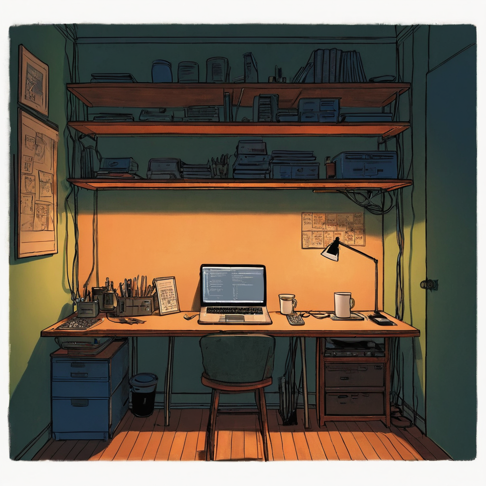

I've been working on a production workflow system for the MonkeyZoo comicbook series. The goal is to get the messy, multi-person process of making a digital comic (writing, lettering, art, layout) into something that actually holds together under real conditions.
The past 24 hours have been all about hardening and improving the system's reliability, with a focus on accessibility, security, and performance:
<main> landmarks and added a "skip to main content" link to help screen readers navigate more smoothly (WCAG 2.4.1 Bypass Blocks).nosniff, frame-deny, and no-referrer to protect against common web vulnerabilities.This is about building a tool that is not only functional but also dependable. A comicbook production system should be able to handle the messy edge cases that come with creative work, from broken art anchors to oversized files, without breaking. These updates make the system more resilient, secure, and easier to maintain over time.
Comicbook production runs into a specific class of failure: the system holds together on clean test cases and falls apart when the art files are malformed, the crop windows are degenerate, or someone uploads something way too large. That's what this round of work was aimed at. The WCAG accessibility pass felt like an odd priority at first for an internal production tool, but as more collaborators touch the system, the navigation and screen reader behavior actually matter. Ruff caught a handful of real bugs I would have shipped otherwise. The infrastructure is getting solid enough that I'm starting to trust it, which is the point.
The immediate priority is running a full comicbook production cycle through the system, from script through final export, to find whatever the hardened pipeline hasn't seen yet. After that, the focus shifts to tighter integration between the art and lettering stages and building out the editor tooling that collaborators touch directly.
